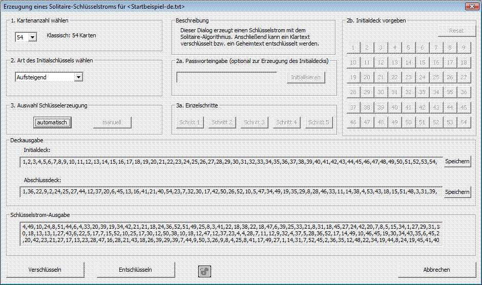

Dialog zur Schlüsselstromerzeugung und Ver-/Entschlüsselung mit dem Solitaire-Algorithmus
Dieser Dialog dient zur Erzeugung eines Schlüsselstromes mit dem Solitaire-Algorithmus.
Der erzeugte Schlüsselstrom kann zur Klartext-Verschlüsselung (Button Verschlüsseln) als auch zur Geheimtext-Entschlüsselung (Button Entschlüsseln verwendet werden. Vor der Solitaire Ver- bzw. Entschlüsselung muss der Klartext oder der Geheimtext in CrypTool als aktuelles Dokument geöffnet sein.
Bemerkung:
Ein mit Solitaire verschlüsselter Geheimtext kann in CrypTool mit Hilfe der halbautomatischen Solitaire-Analyse analysiert werden.
1) Schlüssel erzeugen
Bitte folgen Sie den Nummerierungen der umrandeten Felder (Gruppierungen) in diesem Dialog. Wenn Sie eine Korrektur an einem vorherigen Schritt durchführen möchten, ist es ratsam, erneut mit Schritt 1 zu beginnen.
Gruppierung 1a: Initial deck erstellen (= Mischen) == Schlüssel erzeugen
Wählen Sie die von Ihnen gewünschte Kartenanzahl aus, mit der der Solitaire-Algorithmus durchgeführt werden soll.
Normalerweise werden 54 Karten verwendet (52 + 2 Joker). Diese Kartenanzahl wird auch vom Erfinder Bruce Schneier empfohlen und ist deshalb voreingestellt.
Der Dialog erlaubt Ihnen auch, weniger Karten auszuwählen (mindestens 3 = 1 + 2 Joker).

Gruppierung 1b: Kartenreihenfolge festlegen
Wählen Sie die von Ihnen gewünschte Kartenausgangsposition aus. Hier gibt es sechs verschiedene Möglichkeiten, wobei die "aufsteigende Sortierung" voreingestellt ist.
Beim Entschlüsseln müssen Sie das gleiche Initialdeck einstellen, das zur Verschlüsselung ihres Geheimtextes verwendet wurde (das Initialdeck ist der geheime Schlüssel).

Gruppierung Optional: Passworteingabe
Nachdem Sie die Kartenreihenfolge in Gruppierung 1 b. festgelegt haben, können Sie das Initialdeck anschließend zusätzlich durch eine Passworteingabe modifizieren. Geben Sie einfach ein Passwort ein (maximal 1024 Zeichen), welches nur aus Buchstaben besteht (andere Zeichen werden unterdrückt). Haben Sie ihr Passwort korrekt eingegeben, wenden Sie es bitte durch Klicken des Initialdeck modifizieren-Buttons auf das Initialdeck an. Sie können den Button auch mehrfach drücken. Bei jedem Mal wird das Passwort erneut auf das Kartendeck angewendet, wodurch sich die Reihenfolge des Kartendecks entsprechend ändert.
Beim Entschlüsseln müssen Sie das gleiche Passwort einstellen und genauso oft den Initialdeck modifizieren-Button drücken, wie bei der Anwendung des Passwortes beim Verschlüsseln.
Wenden Sie beispielsweise das Passwort "test" zweimal an (durch zweimaliges Drücken des Initialdeck modifizieren-Buttons), ist dies das Gleiche wie die einmalige Anwendung des Passwortes "testtest".

Gruppierung Optional: Nach Vorgabe
Dieses Steuerelement wird aktiviert, wenn Sie in der Gruppierung 1 b. die Festlegung der Kartenreihenfolge "Nach Vorgabe" gewählt haben. Bitte bauen Sie das von Ihnen gewünschte Initialdeck selbst zusammen, indem Sie die einzelnen Buttons (1-54) in der entsprechenden Reihenfolge anklicken. Wenn Sie eine kleinere Kartenanzahl gewählt haben, dann werden die Buttons für die nicht benötigten Zahlen deaktiviert. Beachten Sie, dass bei der Wahl der vorletzten Zahl der Joker 'A' und bei der Wahl der letzten Zahl der Joker 'B' an das Kartendeck angefügt wird.
Unterläuft Ihnen ein Fehler, klicken Sie bitte den Reset-Button und beginnen die Eingabe erneut. Die Zahlenwerte auf den Buttons entsprechen den Kartenwerten, wie sie in der Solitaire-Beschreibung beschrieben sind. Während Sie die einzelnen Buttons anklicken, können Sie Ihr bisher erzeugtes Deck im Feld "Initialdeck" unter der Gruppierung "Ausgabe der verschiedenen Zustände des Kartendecks und des erzeugten Schlüsselstroms" sehen. Sobald Sie die in Gruppierung 1 a. eingestellte Kartenanzahl erreicht haben, wird dieses Steuerelement deaktiviert und Gruppierung 2. aktiviert.

2) Schlüsselstrom erzeugen
Gruppierung 2: Schlüsselstrom erzeugen (automatisch oder manuell)
Dieses Steuerelement bietet Ihnen zwei Alternativen der Schlüsselstromerzeugung zur Auswahl.

Gruppierung 2 a: Manuelle Einzelschritte des Solitaire-Algorithmus
Diese Steuermöglichkeiten werden aktiviert sobald Sie in Gruppierung 2 den Manuell-Button geklickt haben. Um die Vorgaben des Solitaire-Algorithmus einzuhalten klicken Sie die Buttons (Schritt 1 bis Schritt 5) in aufsteigender Reihenfolge so oft an, bis Sie genügend Schlüsselstromzeichen erzeugt haben. Bei jedem Schritt kann man die Veränderung des Decks im Feld "Ausgangsdeck" in der Deckausgabe erkennen. Ein weiteres Schlüsselstromzeichen wird lediglich bei Schritt 5 erzeugt und der Schlüsselausgabe hinzugefügt.

Bemerkung:
Falls Ihr Klartext z.B. 100 Buchstaben lang ist und Sie manuell z.B. erst 15 Zeichen erzeugt haben, können Sie auch auf den Button Rest generieren klicken. Dadurch werden die restlichen (z.B. 100-15) Schlüsselstromzeichen automatisch erzeugt. In dem kleinen Anzeigetext rechts neben Button-Schritt 5 wird die Anzahl bereits erzeugter Schlüsselstromzeichen und die Anzahl der benötigten Schlüsselstromzeichen angezeigt.
Nachdem ein Schlüsselstrom in ausreichender Länge erzeugt wurde [d.h. Ihr Schlüsselstrom enthält genauso viele Buchstaben (max. 65.535) wie das vorher ausgewählte Dokument (Klartext oder Geheimtext)], werden die Buttons Verschlüsseln, Entschlüsseln und die 3 Speichern-Buttons aktiviert.
Speichern
3) Durchführen der Ver- und Entschlüsselung mit Hilfe des Schlüsselstroms
Verschlüsseln
Wenn Sie diesen Button anklicken, wird mit Hilfe des Schlüsselstroms und dem Klartext der Geheimtext erzeugt.
Entschlüsseln
Wenn diesen Button anklicken, wird mit Hilfe des Schlüsselstroms und dem Geheimtext der ursprüngliche Klartext erzeugt.
Nach dem Klicken der Buttons Verschlüsseln bzw. Entschlüsseln wird der Dialog verlassen und der erzeugte Klar- bzw. Geheimtext erscheint in einem neuen Dokument im CrypTool-Hauptfenster.
Abbrechen
Mit Hilfe dieses Buttons können Sie den Dialog jederzeit verlassen.